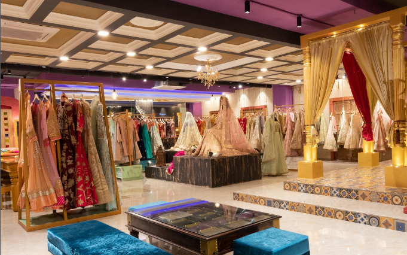

Welcome To Janu Botique
At Janu Boutique, we bring you a beautiful collection of sarees, gowns, kurtis, and accessories that blend tradition with modern style. Whether it’s for a wedding, party, or casual wear, our outfits are designed to make you look elegant and confident. Explore our boutique and find fashion that suits every occasion.